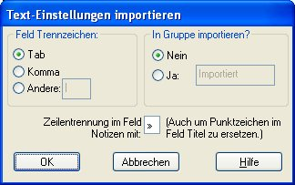

Anmerkung: Teile in blau sind (noch) nicht aus dem Englischen übersetzt.
Password Safe bietet an, Passwortinformationen aus anderen Formaten zu importieren. Diese Formate/Dateien können mit Hilfe anderer Anwendungen entstanden sein z.B. exportiert aus einer Tabelle, oder sogar von Hand geschrieben mit Notepad oder ähnlichem Texteditor.
Die von Password Safe unterstützten Formate sind:
Password Safe generiert am Ende eines Importes einen Bericht mit einer Übersicht über die ausgeführten Operationen und dabei ev. aufgetretene Probleme.
Dieser Bericht kann in die Zwischenablage kopiert werden, oder auf die Festplatte als Textdatei im selben Verzeichnis wie die Datenbank abgespeichert werden.
Unter dem Menupunkt "Ansicht → Berichte" können die Berichte zu einem späteren Zeitpunkt angeschaut werden.
Der Name des Berichtes ist festgelegt, und hängt ab von der Funktion mit der er erzeugt wurde.
Wenn dieselbe Funktion ausgeführt, und der entsprechende Bericht auf die Festplatte abgespeichert wird, wird jegliche Bericht zu dieser Funktion überschrieben.
Hinweis: Der Bericht kann sensible Daten enthalten, so Vorsicht ist geboten beim Abspeichern auf die Festplatte.
Hinweis: Sie können auch Untermengen aus einer anderen Password Safe Datenbank importieren. Sie öffnen eine andere Datenbank mit Password Safe (vorausgesetzt sie erlauben mehrere Instanzen in "Verwalten → Optionen → System"). Sie können per Drag und Drop Einträge oder Gruppen aus der 'import'-Datenbank in Ihre Datenbank ziehen.
Textdateien, aus welchen die Passworteinträge importiert werden können bestehen aus einem oder mehreren Passworteinträgen. Jedes Feld innerhalb eines Eintrages ist mit einem Feldtrennzeichen getrennt und jeder Eintrag besteht aus einer oder mehreren Zeilen. Details zum erwarteten Format der zu importierende Textdatei finden Sie im "Text Export & Import Format" Kapitel.
Das Trennzeichen in der zu importierende Textdatei und ein standardmäßiger Gruppenname für die neuen Einträge können eingestellt werden, bevor die Datei importiert wird.

When importing XML into an empty database, any database preferences in the beginning of the XML input file will be imported into the database. If the current receiving database already has entries, then these preferences will be ignored.
However, any "Password Policy Names" in the XML input file will be imported irrespective of whether there are entries already in the current receiving database. Note however, if a Password Policy with the same name already exists in the database, it will not be overwritten by the values in the XML input file.
If an entry that uses a Password Policy Name is imported and that name is neither in the current receiving database nor in XML input file, then the resulting entry in the database will revert to using the database's default Password Policy.
Change of the coding of XML Date/time values
Prior to PasswordSafe V3.26, date time fields were exported in our own format:
<name>
<date>yyyy-mm-dd</date>
<time>hh:mm:ss</time>
</name>
Where "name" was any of our record date/time fields e.g. 'ctime', 'atime', 'xtime', 'pmtime', 'rmtime' and the password history 'changed' date/time.
However, from V3.26 onwards, PasswordSafe will only export XML date/time fields using the International W3C Standard date/time format. V3.26 and V3.27 can input either format but for versions after 3.27, it will only accept the W3C standard.
The W3C standard for XML date/time fields is:
<namex>yyyy-mm-ddThh:mm:ss</namex>
Where we have changed the "name" to distinguish the fields from the old format by appending an 'x' and so 'namex' is any of our new record date/time fields e.g. 'ctimex', 'atimex', 'xtimex', 'pmtimex', 'rmtimex' and the password history 'changedx' date/time.
To import an older format XML file with date/time fields, you must manually edit these fields to convert to the old PasswordSafe format to the W3C standard format.
Der empfohlene Import von KeePass V1 Datenbankeinträge geht mit XML wie unten beschrieben.
Sie können auch TXT-Dateien exportiert aus Keepass V1 importieren (getestet mir Dateien erzeugt in V1.19b).
Folgende Felder werden umgesetzt zu Password Safe Äquivalente:
Jeder neuer Eintrag beginnt mit einer Zeile beginnend mit '[' und endend mit ']'. Der Text dazwischen wird als 'Titel' für diesen Eintrag verwendet.
Jeder Informationsteil steht in einer Zeile und folgende Tags stehen am Anfang jeder Zeile:
Folgende Felder werden zur Zeit nicht betrachtet:
Beachten Sie dass Zeiten in Password Safe vor 19. Januar 2038 liegen müssen. Jeder Zeit danach wird als ungültig betrachtet, und das zugehörige Feld somit auch.
Bitte beachten Sie dass das Feld "Encode/replace newline characters by '\n'" angekreuzt werden MUSS während des Exportierens mit Keepass V1, wenn nicht kann der Import fehlschlagen oder zu unerwartete Fehler führen.
Sie können auch eine CSV (Comma Separated Values) Datei importieren exportiert mit Keepass V1 (getestet mit Dateien der Version V1.19b).
Folgende Felder werden umgesetzt zu Password Safe Equivalente:
Folgende Felder werden zur Zeit nicht betrachtet:
Beachten Sie dass Zeiten in Password Safe vor 19. Januar 2038 liegen müssen. Jeder Zeit danach wird als ungültig betrachtet, und das zugehörige Feld somit auch.
Bitte beachten Sie dass das Feld "Encode/replace newline characters by '\n'" angekreuzt werden MUSS während des Exportierens mit Keepass V1, wenn nicht kann der Import fehlschlagen oder zu unerwartete Fehler führen.
Der empfohlene Import von KeePass V2 Datenbanken via XML funtioniert wie unten beschrieben.
Password Safe kann keine Datei erzeugt mit KeePass V2 importieren - auch nicht das KeePass V1 CSV Format bei diesem Programm. Allerdings ist es möglich eine KeePass V2 Datenbank zu exportieren wie eine KeePass V1 Datenbank. Sie können diese dann zu einer TXT- oder CSV-Datei exportieren, und diese kann, wie oben beschrieben, importiert werden.
Password Safe kann XML Dateien exportiert mit KeePass V1 oder V2 nicht importieren weil die Felder zu unterschiedlich sind. Allerdings haben wir XSL Umsetz Dateien (KPV1_to_PWS.xslt and KPV2_to_PWS.xslt) mitgeliefert. Die unten aufgeführte Programme können verwendet werden um die exportierte XML Dateien zu bearbeiten mit einer der XSLT Dateien um eine Password Safe-kompatible XML Datei zu erstellen, die wiederum in Password Safe V3.26 oder später importiert werden kann.
Die XSLT Dateien sind konform zu XSLT V1.0, beschrieben in http://www.w3.org/TR/xslt. Sie wurden getestet mit XML Dateien erzeugt mit KeePass V1.19b und KeePass V2.15.
Beachten Sie dass Zeiten in Password Safe vor 19. Januar 2038 liegen müssen. Jeder Zeit danach wird als ungültig betrachtet, und das zugehörige Feld somit auch.
Under Windows, the following XSLT processors support the supplied XSL Transform files. The example command line execution of these processors assume:
For KeePass V1 XML file use the command:
msxsl KeePassV1.xml KPV1_to_PWS.xslt -o PWS.xmlFor KeePass V2 XML file use the command:
msxsl KeePassV2.xml KPV2_to_PWS.xslt -o PWS.xml
For KeePass V1 XML file use the command:
AltovaXML -xslt1 KPV1_to_PWS.xslt -in KeePassV1.xml -out PWS.xmlFor KeePass V2 XML file use the command:
AltovaXML -xslt1 KPV2_to_PWS.xslt -in KeePassV2.xml -out PWS.xml
All these programs are free, although Kernow needs to be registered if used more than 100 times.
| KeePass V1 XML Elements | Password Safe XML Element Equivalent |
|---|---|
| <group> | <group> |
| <title> | <title> |
| <username> | <username> |
| <password> | <password> |
| <url> | <url> |
| <notes> | <notes> |
| <lastmodtime> | <pmtimex> and <rmtimex> |
| <creationtime> | <ctimex> |
| <lastaccesstime> | <atimex> |
| <expiretime> | <xtimex>, if the KeePass <expiretime> attribute "expires" is 'true' |
| <image> <attachdesc> <attachment> | These have no Password Safe equivalent and are ignored |
KeePass V2 exports all strings, e.g. Title, in a "String" section with "Key" and "Value" sub-elements. For example:
<String> <Key>Title</Key> <Value>Test title</Value> </String>
The following table shows the conversion of these to the Password Save equivalent XML element.
| KeePass V2 String Keys | Password Safe Entry XML Element Equivalent |
|---|---|
| Title | <title> |
| Username | <username> |
| Password | <password> |
| URL | <url> or <runcommand> depending on the prefix (see notes above) |
| Notes | <notes> |
| All others | Inserted into the Password Safe Notes field in the form: "Key: Value" |
KeePass V2 exports all date/time fields, e.g. creation time, in a "Times" section. For example:
<Times> <LastModificationTime>2011-05-30T14:20:57Z</LastModificationTime> <CreationTime>2011-05-27T18:09:29Z</CreationTime> <LastAccessTime>2011-05-30T14:20:57Z</LastAccessTime> <ExpiryTime>2999-12-28T23:59:59Z</ExpiryTime> <Expires>False</Expires> </Times>
The following table shows the conversion of these to the Password Save equivalent XML element.
| KeePass V2 Time Values | Password Safe Entry XML Element Equivalent |
|---|---|
| <Times>/<LastModificationTime> | <pmtimex> and <rmtimex> |
| <Times>/<CreationTime> | <ctimex> |
| <Times>/<LastAccessTime> | <atimex> |
| <Times>/<ExpiryTime> | <xtimex> if <Times>/<Expires> is 'True' |
KeePass V2 can create an history section when anything is changed in an entry. Password Safe only saves password changes. All other saved changed fields in the KeePass XML element are ignored.
| KeePass V2 History | Password Safe Entry XML Element Equivalent |
|---|---|
| <Times>/<LastModificationTime> | <history_entry>/<changedx> |
| <String[Key='Password']> | <history_entry>/<oldpassword> |
| All other tags from <History> | Ignored |
The following KeePass V2 Auto-type special codes (see http://keepass.info/help/base/autotype.html) are translated as follows. All codes not listed are copied across as-is.
| KeePass V2 Auto-type | Password Safe Equivalent |
|---|---|
| \ | \\ (escaping '\') |
| Tab {TAB} | \t |
| Enter {ENTER} or ~ | \n |
| Backspace {BACKSPACE}, {BS} or {BKSP} | \b |
| Keypad + {ADD} | + |
| Keypad - {SUBTRACT} | - |
| Keypad * {MULTIPLY} | * |
| Keypad / {DIVIDE} | / |
| + {+} | + |
| ^ {^} | ^ |
| % {%} | % |
| ~ {~} | ~ |
| (, ) {(}, {)} | (, ) |
| {DELAY X} Delays X milliseconds. | \wX (\WX) |
| {DELAY=X} Sets the default delay to X milliseconds for all standard keypresses in this sequence. | \dX |
The following KeePass V2 Platzhalter (see http://keepass.info/help/base/placeholders.html) are translated as follows. All codes not listed are copied across as-is.
Platzhalter achten nicht auf Groß- oder Kleinschreibung. Custom strings can be referenced using {S:Name}. For example, if the database has a custom string named "eMail", it can be referenced via the Placeholder {S:eMail}.
| KeePass V2 Platzhalter | Password Safe Autom. Eingabe | Password Safe Kommando ausführen |
|---|---|---|
| {GROUP} | \g | ${G} |
| {TITLE} | \i | ${t} |
| {USERNAME} | \u | ${u} |
| {PASSWORD} | \p | ${p} |
| {NOTES} | \o | ${n} |
| KeePass V2 Platzhalter | Password Safe Kommando ausführen |
|---|---|
| \{ | \\{ (escaping \) |
| $ | \$ (escaping $) |
| {GROUPPATH} | ${g} |
| {URL} | ${url} |
| {URL:RMVSCM} | ${url} |
| {APPDIR} | ${appdir} |
| {DB_PATH} | ${fulldb} |
| {DB_DIR} | ${dbdir} |
| {DB_NAME} | ${dbname}.${dbextn} |
| {DB_BASENAME} | ${dbname} |
| {DB_EXT} | ${dbextn} |
| All others | Copied unchanged |